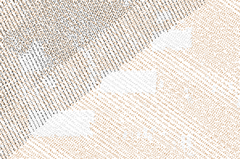
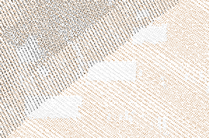
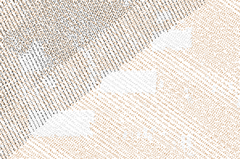

Figure 1: Comparison of original points, decimation result with every forth point preserved, and grid-based decimation result with points with unique categories in each grid cell
Two main decimation techniques are:
The grid-based decimation will remove points based on:
The grid-based decimation is currently using a 2D grid, so the points are placed and compared within this 2D grid. The comparison can happen using z coordinates or categories. Note that although the grid is only 2D, the module works with 3D points.
The grid-based decimation extent and resolution depend on the current computational region as set by g.region. As a consequence, the output is limited only to computational region in this case.
TODO: Currently, any output is limited by the region.
The count-based decimation result highly depends on how the data are ordered in the input. This applies especially to offset and limit options where the resulting shape and densities can be surprising. The options skip and preserve are influenced by order of points in a similar way but they usually keep relative density of points (which may or may not be desired). On the other hand, the grid-based decimation will generally result in more even density of output points (see Figure 1).
Besides decimation, point count can be reduced by applying different selections or filters, these are:
Significant speed up can be gained using -b flag which disables building of topology for the output vector map. This may limit the use of the vector map by some modules, but for example, this module works without topology as well.
v.decimate input=points_all output=points_decimated_every_4 preserve=4
Keep only points within a grid cell (given by the current computational region) which has unique categories (e.g. LIDAR classes):
v.decimate input=points_all output=points_decimated_unique_cats layer=1 -g -c

Figure 1: Comparison of original points, decimation result with every forth point preserved, and grid-based decimation result with points with unique categories in each grid cell
Keep only points with category 2 and keep only approximately 80% of the points:
v.decimate input=points_all output=points_decimated_ skip=5 cats=2 layer=1